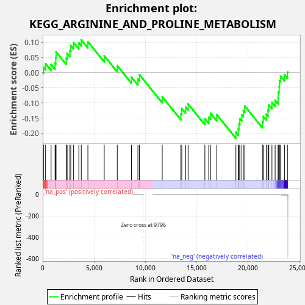
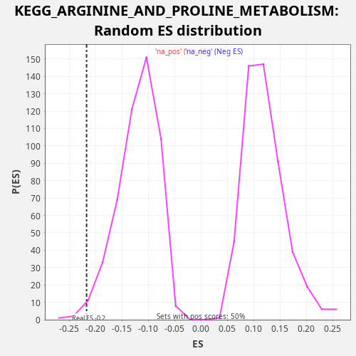

| Dataset | CCLE |
| Phenotype | NoPhenotypeAvailable |
| Upregulated in class | na_neg |
| GeneSet | KEGG_ARGININE_AND_PROLINE_METABOLISM |
| Enrichment Score (ES) | -0.21708459 |
| Normalized Enrichment Score (NES) | -1.8102732 |
| Nominal p-value | 0.012 |
| FDR q-value | 0.059192926 |
| FWER p-Value | 0.736 |

| SYMBOL | RANK IN GENE LIST | RANK METRIC SCORE | RUNNING ES | CORE ENRICHMENT | |
|---|---|---|---|---|---|
| 1 | NOS3 | 76 | 2.545 | 0.0172 | No |
| 2 | MAOA | 279 | 0.157 | 0.0292 | No |
| 3 | ALDH4A1 | 817 | 0.011 | 0.0270 | No |
| 4 | LAP3 | 1204 | 0.005 | 0.0312 | No |
| 5 | ALDH9A1 | 1276 | 0.004 | 0.0487 | No |
| 6 | SMS | 1302 | 0.004 | 0.0680 | No |
| 7 | ASL | 2292 | 0.001 | 0.0470 | No |
| 8 | GAMT | 2379 | 0.001 | 0.0638 | No |
| 9 | ALDH1B1 | 2650 | 0.001 | 0.0728 | No |
| 10 | SRM | 2733 | 0.001 | 0.0898 | No |
| 11 | GOT2 | 3010 | 0.000 | 0.0986 | No |
| 12 | ARG2 | 3520 | 0.000 | 0.0977 | No |
| 13 | AGMAT | 3758 | 0.000 | 0.1081 | No |
| 14 | SAT2 | 4402 | 0.000 | 0.1016 | No |
| 15 | PYCR1 | 5995 | 0.000 | 0.0552 | No |
| 16 | OAT | 7265 | 0.000 | 0.0224 | No |
| 17 | ALDH18A1 | 8647 | 0.000 | -0.0152 | No |
| 18 | ACY1 | 9276 | 0.000 | -0.0211 | No |
| 19 | GLS | 9423 | 0.000 | -0.0068 | No |
| 20 | PYCR2 | 11646 | -0.000 | -0.0796 | No |
| 21 | AMD1 | 13463 | -0.000 | -0.1354 | No |
| 22 | GLS2 | 13545 | -0.000 | -0.1184 | No |
| 23 | P4HA2 | 13926 | -0.000 | -0.1139 | No |
| 24 | GOT1 | 14166 | -0.000 | -0.1036 | No |
| 25 | ARG1 | 15799 | -0.000 | -0.1516 | No |
| 26 | GLUD1 | 16175 | -0.000 | -0.1469 | No |
| 27 | GATM | 16358 | -0.000 | -0.1342 | No |
| 28 | ODC1 | 16958 | -0.000 | -0.1389 | No |
| 29 | P4HA1 | 18823 | -0.001 | -0.1967 | Yes |
| 30 | CKMT2 | 19051 | -0.001 | -0.1858 | Yes |
| 31 | SAT1 | 19126 | -0.001 | -0.1685 | Yes |
| 32 | ALDH3A2 | 19203 | -0.001 | -0.1513 | Yes |
| 33 | GLUD2 | 19403 | -0.002 | -0.1392 | Yes |
| 34 | GLUL | 19552 | -0.002 | -0.1250 | Yes |
| 35 | P4HA3 | 19684 | -0.002 | -0.1101 | Yes |
| 36 | CKMT1A | 21408 | -0.013 | -0.1620 | Yes |
| 37 | ALDH2 | 21484 | -0.015 | -0.1447 | Yes |
| 38 | ASS1 | 21782 | -0.022 | -0.1368 | Yes |
| 39 | CKMT1B | 21951 | -0.029 | -0.1234 | Yes |
| 40 | AOC1 | 22030 | -0.033 | -0.1063 | Yes |
| 41 | ALDH7A1 | 22334 | -0.058 | -0.0986 | Yes |
| 42 | AZIN2 | 22645 | -0.120 | -0.0912 | Yes |
| 43 | CPS1 | 22937 | -0.262 | -0.0830 | Yes |
| 44 | CKB | 22950 | -0.271 | -0.0631 | Yes |
| 45 | NAGS | 23038 | -0.343 | -0.0463 | Yes |
| 46 | NOS2 | 23061 | -0.367 | -0.0268 | Yes |
| 47 | PRODH | 23163 | -0.509 | -0.0107 | Yes |
| 48 | MAOB | 23556 | -2.565 | -0.0067 | Yes |
| 49 | NOS1 | 23846 | -13.403 | 0.0016 | Yes |

{kind=link}
{kind=link}